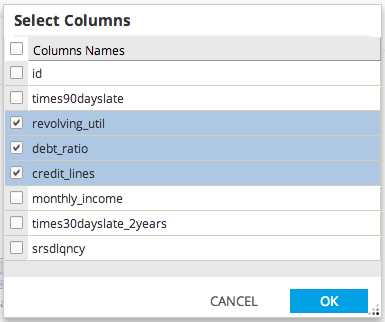
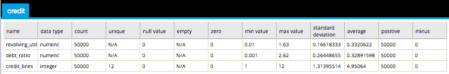

Summary Statistics
The Summary Statistics provides a quick summary on the selected columns of the dataset.
A summary table of the following attributes of each data column:
- data type
- row count
- number of distinct values
- number of null values
- number of empty values
- number of zeros
- the minimum value
- the maximum value
- the standard deviation
- the average
- the number of positive values
- the number of negative values
Availability:
- Database operators must output a table/view for Summary Statistics to be enabled.
- Hadoop operators must store results for Summary Statistics to be enabled.
- Summary Statistics is accessible from the Explore menu of the operator toolbar or by right-clicking an appropriate operator.

